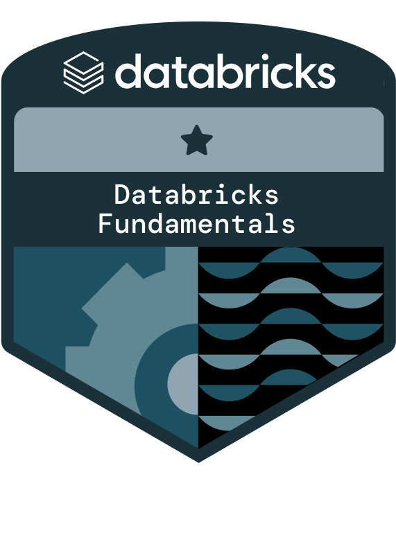
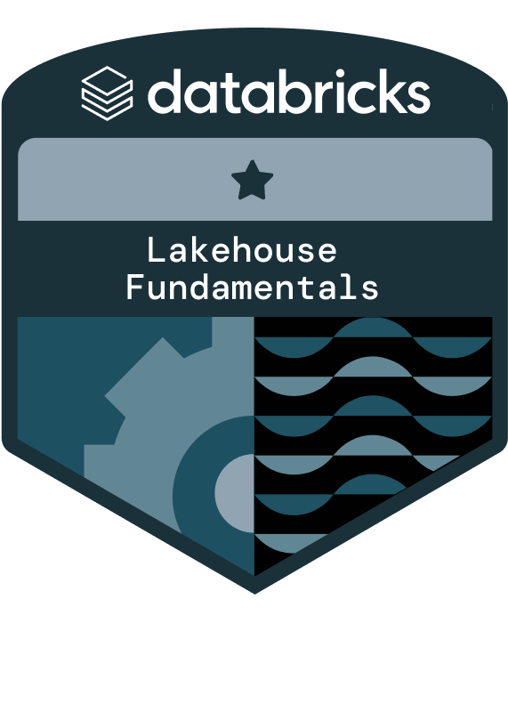

Oleh Mykhasiv
DevOps Engineer
CVAbout Me
I'm a DevOps engineer with 5+ years of experience in automation, cloud engineering (Azure, AWS, Oracle Cloud), CI/CD, and infrastructure as code (Terraform, Ansible). I have a proven track record of optimizing workflows, reducing deployment times, and ensuring high system reliability. Passionate about learning new technologies and solving complex challenges.
Certifications

Microsoft Certified: Azure Data Fundamentals

Oracle Cloud Data Management Foundations Certified Associate

Oracle Cloud Infrastructure Foundations Certified Associate

Academy Accreditation - Databricks Fundamentals

Academy Accreditation - Databricks Lakehouse Fundamentals
Academy Accreditation - Platform Administrator